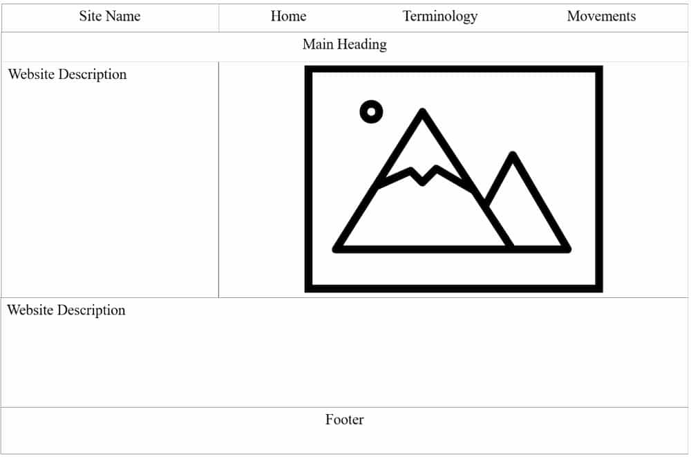
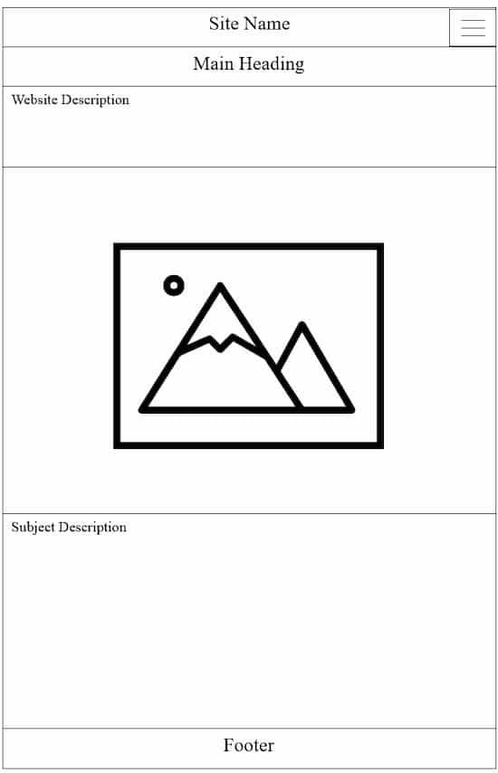

I choose this site name because the website is about dressage and it is made by me (Alyssa).
Site Purpose
This website will provide a brief description and history of dressage on the homepage. The terminology page will include definitions for common words and phrases. The movements page will contain a picture and description of movements by level.
Scenarios
What does "dressage" mean? What are the movements for first level dressage? What is a half-halt?
Color Schema
The color blue (rgb (47, 113, 170)) will be used as the background color for the headings. The color light blue (rgb(218, 243, 255)) will be used as the main background color for the page.
Typography
Main Heading
Sub-Headings
Main Text
Wireframes
Desktop View

Mobile View
